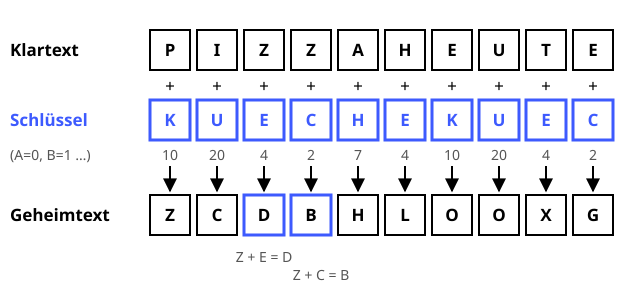

Vigenère-Verschlüsselung
Caesar mit Schlüsselwort – 300 Jahre lang als „unknackbar“ gehandelt.
Definition
Die Vigenère-Verschlüsselung (16. Jahrhundert, benannt nach Blaise de Vigenère) erweitert die Caesar-Verschlüsselung: Statt einer festen Verschiebung gibt ein Schlüsselwort die Verschiebungen vor. Das Schlüsselwort wird immer wieder über den Klartext geschrieben, und jeder Schlüsselbuchstabe sagt, um wie viele Stellen der Buchstabe darunter verschoben wird (A = 0, B = 1, … Z = 25). Lange galt sie als „le chiffre indéchiffrable“ – die unknackbare Chiffre.
Zutaten
- Klartext (Buchstaben A–Z)
- Geheimes Schlüsselwort, z. B. KUECHE
- Das Alphabet mit 26 Buchstaben
Zubereitung
- Absender und Empfänger vereinbaren heimlich ein Schlüsselwort.
- Das Schlüsselwort so oft wiederholen, bis es so lang ist wie der Klartext.
- Für jeden Buchstaben den Wert des Schlüsselbuchstabens darüber bestimmen: A = 0, B = 1, … Z = 25.
- Den Klartextbuchstaben um diesen Wert verschieben – genau wie bei Caesar.
- Der Empfänger schreibt das Schlüsselwort genauso darüber und verschiebt jeden Buchstaben zurück.
Skizze

Jeder Schlüsselbuchstabe (blau) gibt die Verschiebung für den Buchstaben darunter vor. Die beiden Z in PIZZA werden so zu verschiedenen Buchstaben.
Skizze erstellt von Claude (KI)
Demo
Tipps
- Gleiche Klartextbuchstaben werden unterschiedlich verschlüsselt – die einfache Häufigkeitsanalyse wie bei Caesar funktioniert nicht mehr.
- Trotzdem knackbar: Weil sich das Schlüsselwort wiederholt, findet man mit dem Kasiski-Test (1863) seine Länge. Danach ist jede Spalte nur noch ein Caesar.
- Ist das Schlüsselwort echt zufällig und so lang wie die Nachricht, wird daraus ein One-Time-Pad.
- Leerzeichen im Geheimtext besser weglassen – sonst verraten sie die Wortlängen.